Unofficial · community remaster · Mega Drive, 1993
Dune: The Battle for Arrakis,
rebuilt as a native binary._
Not an emulator running a cartridge in a generic machine. The game's 68000 code is statically recompiled into C, compiled into the executable and linked against an SDL2 hardware layer. What you run is one native program that plays the game.
On top of that faithful base sits the part this page is about: it plays with a mouse, it plays wider than a Mega Drive could, and it saves state wherever you like.
You supply your own ROM. This project ships no game data — no cartridge, no extracted assets — and never will.
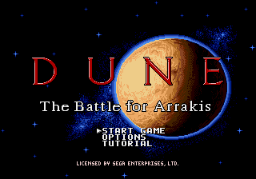
On by default. Left button is A, right is B, middle is C — and the cursor is under your pointer on the same frame you move it.
The cartridge moves its own cursor at most three pixels a frame, so crossing the screen takes over two seconds. No amount of nudging a d-pad emulation makes that keep up with a pointer. So db4a writes the cursor position directly instead.
Its scrolling rule had to go too: the original scrolls whenever the cursor leaves a box in the middle of the screen about a quarter of its width. That is fine for a d-pad and unusable with a mouse, because the map lurches the moment you point away from centre. A 24-pixel band at the screen edges replaces it, with speed ramped by how far into the band you have pushed.
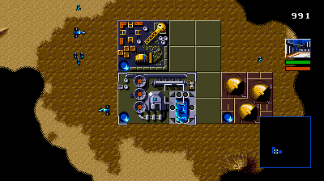
Pointer selection reaches the screens where it matters. In the Construction Yard's build console, pointing at an icon selects it — showing its name and price — and left click builds it. The Starport takes the pointer. So do house selection and the mentat's yes-or-no.
Each of those is covered by a test that points at a cell and requires the game to
have selected it: make check-menu and make check-menus.
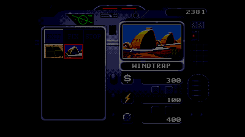
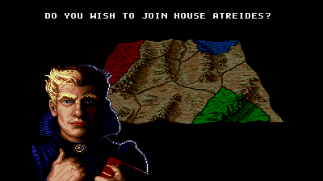
On by default at 400×224. Anything from 320 to 1024 works in either direction, so 640×480 and 800×600 do too.
During gameplay the whole picture shifts right, which keeps the HUD flush against the right edge with its backdrop still underneath it, and the new space opens on the left as more map. Menus, the mentat and the cutscenes are 320-wide compositions with nothing to anchor a wider one, so they are centred rather than stretched.
The extra picture is drawn from the game's own map data, read straight out of work RAM. The cartridge only ever writes tiles for the 320 pixels it believes are visible, so reading those back gives you leftovers that depend on which way you last scrolled. Map data has no such dependence. It cannot invent map either: ground you have never explored stays dark, exactly as the cartridge would leave it.
wide = 320 is a real off switch, not an approximation of one. The
cartridge's own 320 pixels come out byte-identical either way — proven at
nine view sizes up to 1024×1024, with the recorded mission replaying unchanged
at every one of them.
320×224 — what the cartridge shows
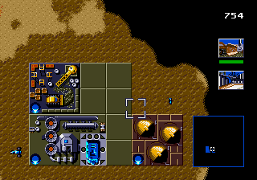
400×224 — the same frame, same scale
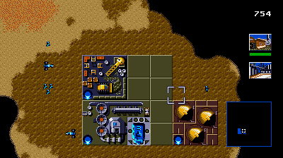
The cartridge tells us so itself. The camera limits it writes leave a world exactly 1024 pixels square in both missions measured, so a 1024-wide view shows the whole map at once and holds the camera still. Anything beyond that could only be empty space.
400 is the default rather than the maximum for a plainer reason: the wider the view, the more of your screen is fog of war rather than scenery.
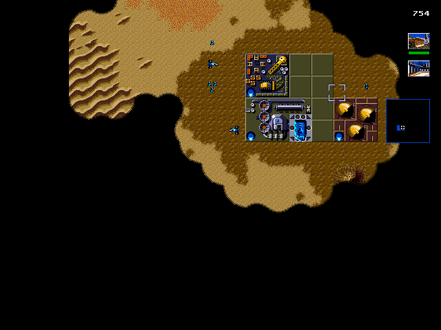
The small things a 1993 cartridge had no way to offer. None of them change what the game simulates.
F5 writes, F9 reads. The whole machine is recorded, and a build that changes the CPU or chip layout refuses an old file rather than loading it corrupt.
P pauses. Hold ` (backtick) or F to run fast — useful for the long stretches where you are waiting on spice.
F11 toggles fullscreen. Integer scaling makes every source pixel the same number of screen pixels, at the cost of black borders.
Pads are picked up automatically. Any face button can be rebound without a rebuild:
keys = a=q,b=w,c=r.
db4a.conf sits next to the binary, so you can tinker and restart without
a shell. The startup banner prints what actually resolved.
Sessions record deterministically and replay frame for frame — keyboard and pointer alike. It is how the regression tests are made.
Menu selection arrives in one step instead of crawling across the screen at the cartridge's pace.
make dist packages the game, your cartridge and a config into one
folder that runs anywhere: ./play.sh.
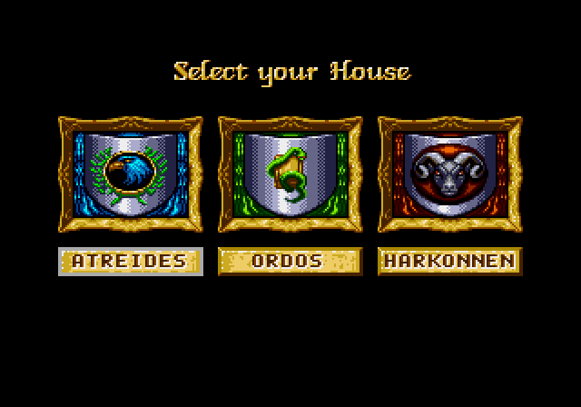
The fidelity policy is faithful first. The base build matches the cartridge closely enough that a reference emulator stays usable as a correctness oracle, and every departure from it lives on a separate branch as a deliberate, reviewable patch.
So the remaster is not a reinterpretation. It is the 1993 game, with the controls it would have had if it had been written for a machine with a mouse.
All three houses load and play, missions progress, and both endings are reached. Every screen below is db4a's own output, from a replay or a scripted run.
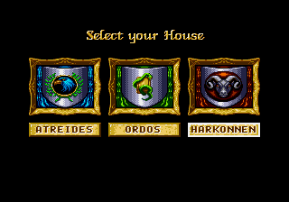
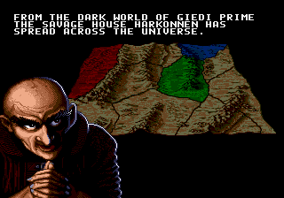
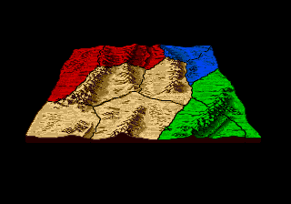
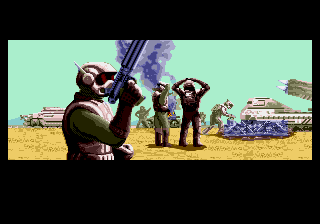
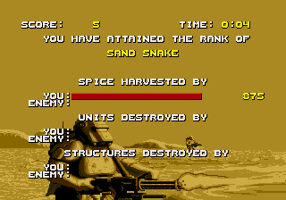
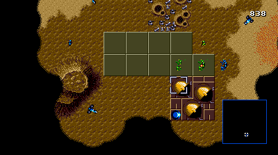
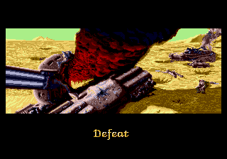
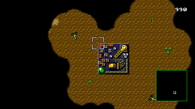
All of it reproducible from a clean checkout. The project's own rule is that a heuristic gets labelled as a heuristic.
| CPU | 19667 / 19667 SingleStepTests m68000 vectors |
| Z80 | zexdoc, plus per-instruction T-state timing |
| Menus | Pixel-exact against Genesis-Plus-GX |
| Gameplay | 99.2% — the residual is unit positions a pixel or two out |
| Pacing | PAL 49.7015 Hz, 0.0002% drift |
| Audio | YM2612 + PSG. Music starts within 0.02 s of the reference; envelope correlation 0.80 |
| Build | ~35 s from clean, no warnings |
Audio is a question of levels now, not timing. The music bug is fixed: the sound driver was losing a third of its Z80 interrupts, because the VDP holds that interrupt as a level for one scanline and db4a was pulsing it. The music now starts within 0.02 s of the reference where it was 12.7 seconds late, and the stream of chip writes matches to 0.3%. What is left is synthesis: the mix runs about 3.3 dB hot and its envelope correlates 0.80 against the reference rather than 1.0.
Not every mission has been played. The campaign's structure is verified — all three houses, mission progression, victory and defeat — but the later missions of each house have not been played through by hand.
Mission one is playable end to end and can be won or lost.
Linux, SDL2, and a cartridge you own.
# the remaster branch is the one with mouse and widescreen git clone https://github.com/Vegasq/db4a cd db4a && git checkout remaster make # generate, build, run the unit tests (~35 s) make play # play make play WIDE=320 # the cartridge's own view DB4A_MOUSE=0 make play # keyboard and pad only
Developed on Fedora 44; any distribution with SDL2 and the analysis
tools should work. master holds the faithful recompile with no
modernisation at all.
Place a legally obtained dump of the European cartridge here:
roms/Dune-The-Battle-for-Arrakis_Genesis_EN/
Dune - The Battle for Arrakis (E).bin
sha1 133cc86b43afe133fc9c9142b448340c17fa668e
make verify-rom checks it. The build reads the ROM to generate code and
the binary loads it at runtime; neither the ROM nor anything extracted from it is
distributed here.
Obtaining it is your responsibility. In most places that means dumping a cartridge you own.
Static recompilation. 68000 basic blocks are translated into generated C functions, each returning the next PC, driven by a flat dispatch loop. Indirect transfers are computed return values rather than nested calls, so the C stack never grows.
That was chosen over a hand decompilation — realistically person-years for a 1 MiB cartridge — and over extracting the assets into a new engine. The deciding factor: the game's main state machine dispatches through a function pointer held in RAM, so static analysis alone cannot reach most of the ROM.
Instruction semantics are defined exactly once, as data. The recompiler and every generated test come from the same definition, so an instruction cannot behave one way in one place and differently in another.
Some game logic is now ours: the cursor's edge-scrolling is reimplemented in C, and a checker runs both implementations on every call, diffing RAM, registers, flags, cycles and the exit PC.
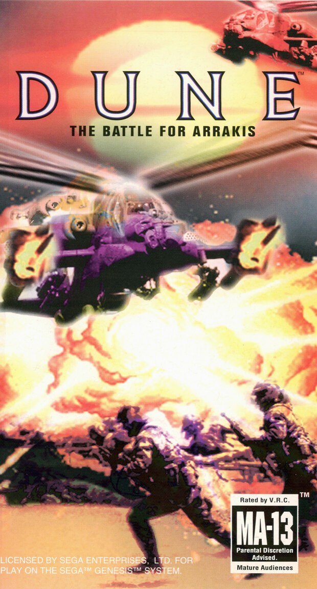
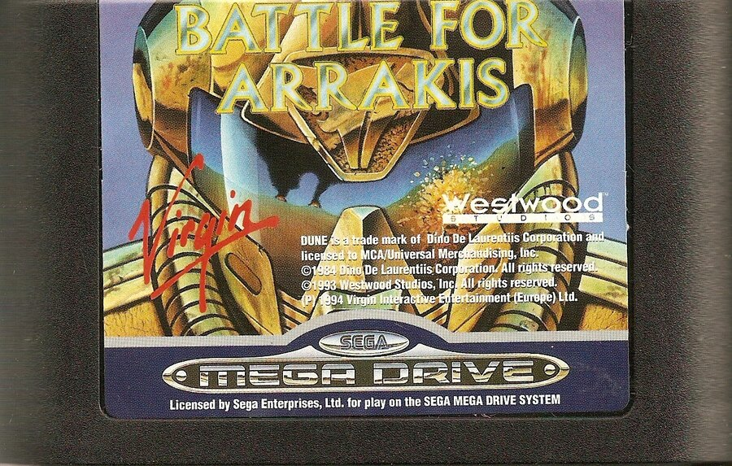